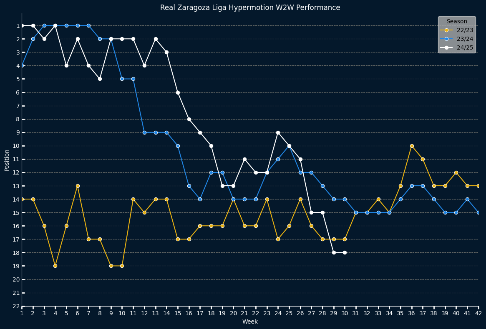
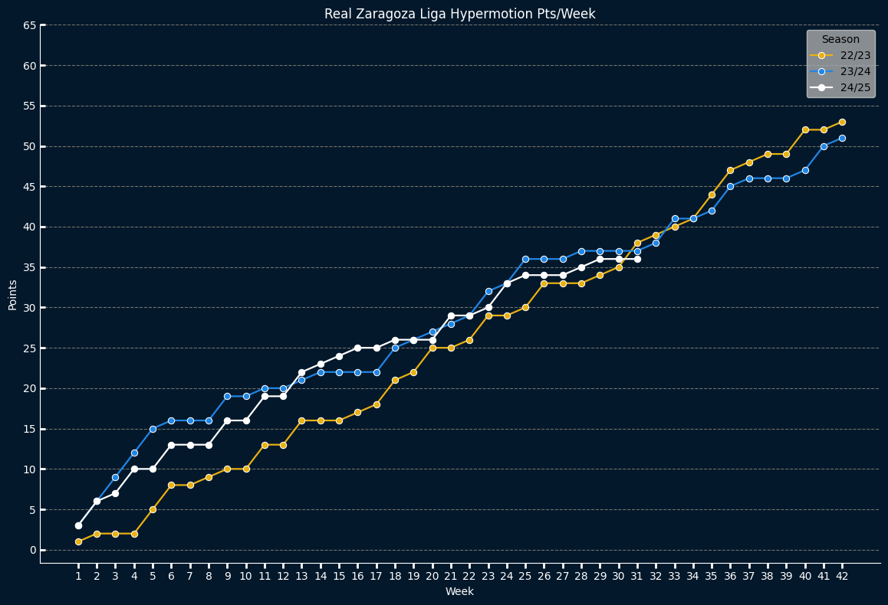

PROYECTO 01 · RENDIMIENTO · PYTHON
Rendimiento jornada a jornada
Análisis del rendimiento de un equipo a lo largo de la temporada, jornada a jornada, para ver cómo evoluciona y compararlo con temporadas anteriores. El caso de estudio es el Real Zaragoza en LaLiga Hypermotion.
Objetivo
Visualizar en qué momento de la temporada un equipo gana o pierde terreno: su posición en la clasificación y los puntos acumulados en cada jornada, superponiendo varias temporadas para comparar trayectorias.
Datos y metodología
- Obtención: datos recogidos de Sofascore y Fotmob mediante scraping.
- Limpieza: construcción de dataframes con Pandas y adaptación de los datos al formato jornada a jornada.
- Automatización: funciones propias que encapsulan la creación y limpieza de los dataframes, de modo que el proceso se puede repetir con otros equipos o competiciones.
- Visualización: gráficos de líneas con Matplotlib y Seaborn. En la versión
.pyse añade una leyenda interactiva para mostrar u ocultar cada temporada (idea sugerida por Liam Whyte, Football Data & Performance Analyst).
Resultados

En 23/24 y 24/25 el equipo arranca en puestos altos y se desploma a partir de la jornada 10–15, mientras que en 22/23 pasa casi toda la temporada en la zona baja y remonta al final.

En puntos acumulados las tres temporadas convergen hacia la mitad del campeonato: la diferencia está en el ritmo de inicio, no en el total.
Próximos pasos
La estructura se puede reutilizar para comparar distintos equipos en una misma competición. La siguiente mejora es una función que automatice el scraping y genere los dataframes de todos los equipos de una competición y temporada.